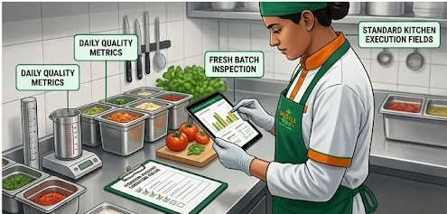
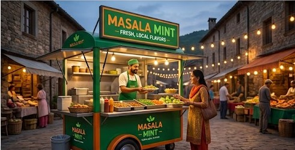

A Reliable Rural Future through Street Food
Rural roadside food often suffers from inconsistent taste and concerning hygiene standards. This creates a trust gap between vendors and customers.
We saw this challenge as an opportunity to introduce a micro-franchising model.


By providing branded carts, standardized recipes, and comprehensive training to local vendors, we create a network that village communities can trust.
This approach standardizes the food experience while generating durable, professional livelihoods within rural economies.